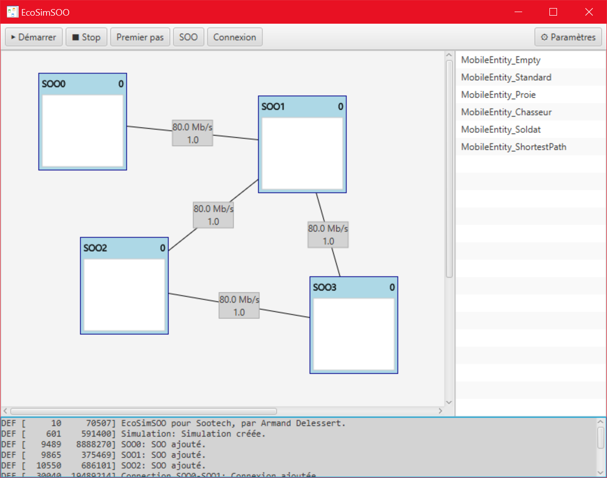
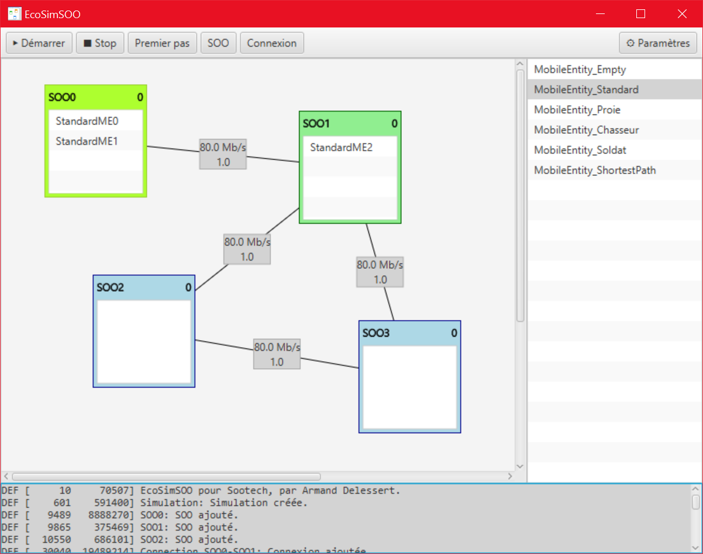
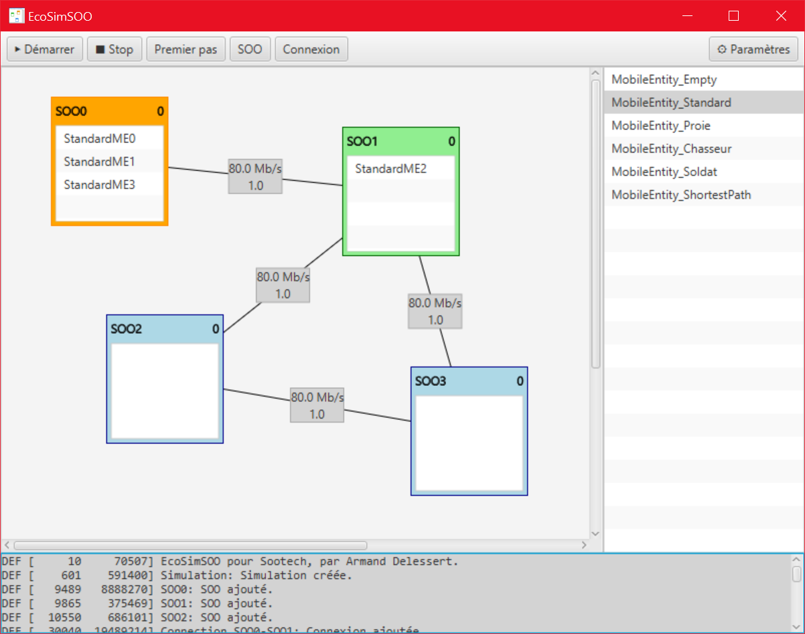
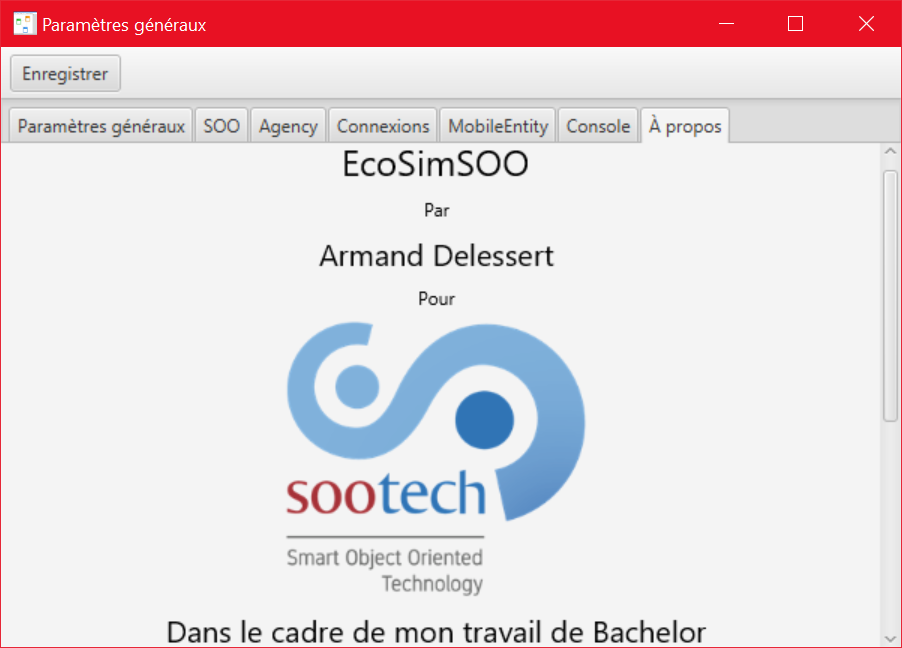

EcoSimSOO
Simulation d’un écosystème composé de dispositifs de type SOO
Résumé
Sootech SA est une startup issue de l’institut REDS de la HEIG-VD, centrée sur la technologie SOO (Smart Object Oriented) dont un brevet a été déposé, qui permet de rendre n’importe quel objet intelligent et collaboratif.
Dans ce but, les applications migrent en temps réel d’un dispositif à un autre. Le projet EcoSimSOO propose le développement d’un framework de simulation comportementale d’un écosystème composé de dispositifs SOO, dans lequel circulent des applications ayant des comportements différents au niveau de leur propagation et leur coopération.
La technologie SOO repose sur un réseau d’appareils SOO communicants les uns avec les autres via une communication sans fil. Sur ce réseau circule une ou plusieurs MobileEntity (application s’exécutant sur un SOO), transmise de SOO en SOO par les Agency (« système d’exploitation » d’un SOO). Plusieurs MobileEntity peuvent tourner en parallèle sur un même SOO. Le travail de l’Agency d’un SOO est d’alterner entre l’envoi de copies des MobileEntity qu’elle possède aux autres SOO du réseau et la réception des MobileEntity reçues de la part des autres SOO. Ce mécanisme permet aux MobileEntity de se propager facilement et naturellement dans tout le réseau, sans même qu’elles ne s’en rendent compte. Cette propagation intrinsèque au réseau permet aux MobileEntity de se comporter comme si elles fonctionnaient en parallèle sur tous les SOO du réseau.
Une MobileEntity qui nécessite à la fois un capteur et un affichage peut fonctionner sur un réseau de SOO où les capteurs et les affichages ne sont jamais connectés sur les mêmes SOO.
Captures d'écran



